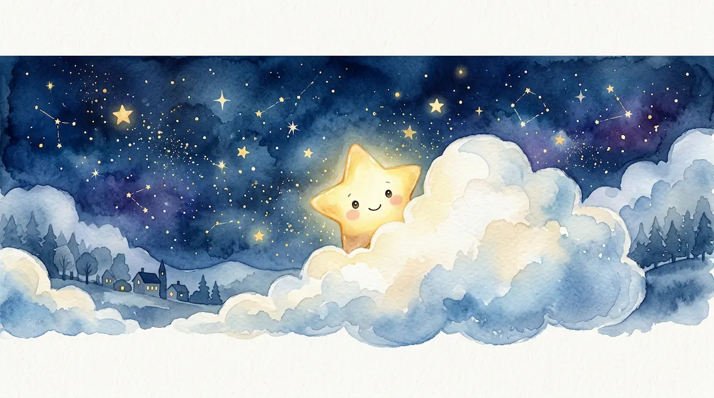
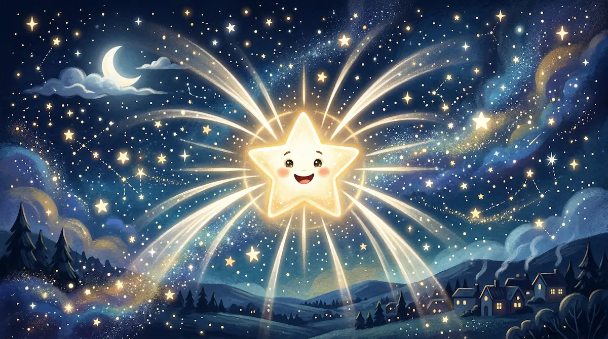
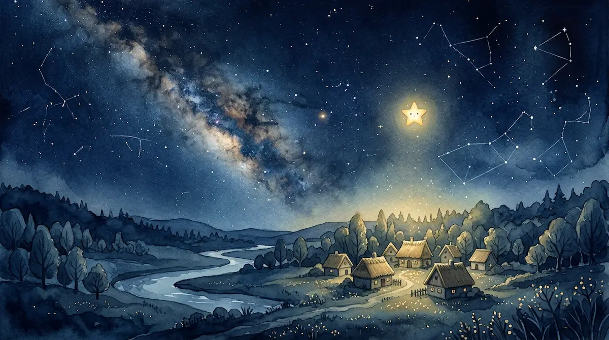
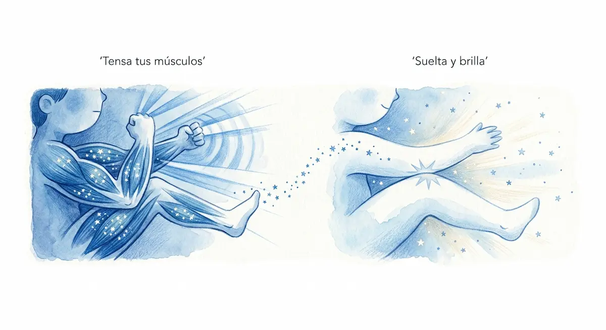
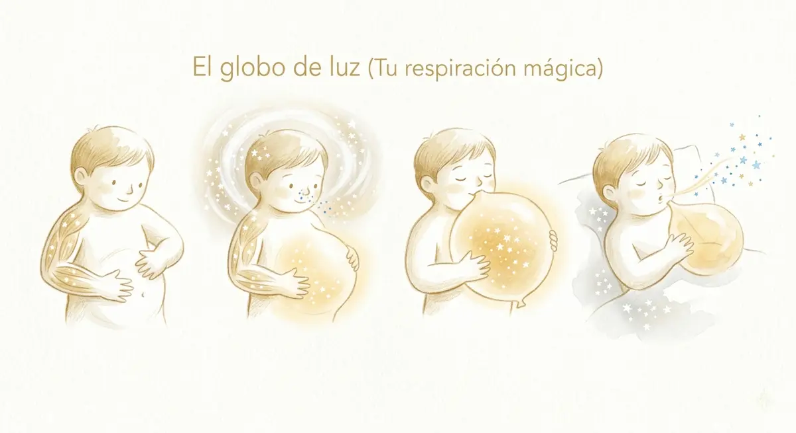

2. La Estrellita que Tenía Miedo a la Oscuridad
Hola, mi pequeño gran explorador. Ponte muy cómodo, como si fueras un pequeño tesoro envuelto en una manta de algodón. Antes de nuestra historia, quiero decirte algo importante: a veces, cuando el sol se va y llega la noche, es normal sentir un poquito de miedo o inseguridad. Ese miedo es un instinto muy antiguo que nos dice que debemos buscar un lugar seguro, y está bien reconocerlo y darle un espacio en nuestro corazón.

Incluso las cosas más brillantes del cielo pueden sentir lo mismo que tú. ¿Sabías que había una estrellita que también le tenía miedo a la oscuridad? Ella se escondía detrás de las nubes grandes y esponjosas en cuanto el sol empezaba a bostezar.
La luz que se esconde

Nuestra pequeña amiga pensaba que la oscuridad era un lugar donde las cosas desaparecían. Ella no sabía que el sueño no es el final del día, sino el taller donde se fabrica nuestro mañana. Mientras ella se encogía de miedo, el Sol, que es muy sabio, le habló con una voz cálida:
"Pequeña estrella —le dijo—, ¿por qué te escondes? Yo necesito irme a descansar para que las flores y los niños también puedan dormir y crecer fuertes". Pero la estrellita no comprendía que, al apagarse mi luz de sol, es cuando tu propia luz se vuelve más especial.

La estrellita sentía su pecho apretado, como cuando tú sientes nervios antes de una situación nueva. Pero entonces, se dio cuenta de algo mágico: la oscuridad no es un monstruo que nos atrapa, sino un lienzo inmenso y suave.
La estrella que se expande

Para brillar, la estrellita aprendió que primero debía soltar la tensión de su cuerpo. Vamos a ayudarla a brillar haciendo un ejercicio de estiramiento juntos, como si nosotros también fuéramos estrellas. Ponte de pie o estírate en tu cama. Imagina que eres una estrella con cinco puntas: tu cabeza, tus dos manos y tus dos pies.
1. Tensa tus músculos: Cierra los puños muy fuerte y estira tus brazos y piernas todo lo que puedas, como si quisieras tocar las paredes de tu habitación con tus rayos de luz. Siente esa tensión un momento... aguanta...
2. Suelta y brilla: Ahora, suelta todo el cuerpo de golpe. Deja que tus brazos y piernas caigan blanditos, como si fueras un muñeco de trapo. Fíjate en lo bien que se siente tu cuerpo cuando estás relajado en lugar de tenso.
Al estirarse así, la estrellita vio que su luz era blanca y pura, y que solo en la oscuridad podía guiar a los viajeros y acompañar los sueños de los niños. La noche era su hogar, el lugar donde ella realmente era la protagonista.
Ahora la estrellita ya no tiene miedo, porque sabe que ella es parte de la paz de la noche. La oscuridad es solo el silencio que necesitamos para escuchar nuestro propio corazón y descansar profundamente. Al igual que ella, tú tienes una luz dentro que te acompaña siempre, incluso cuando cierras los ojos para dormir. Todo está bien, estás seguro y este es tu momento de reposar.
Respiración final

Terminemos con nuestra respiración del globo para guardar toda esta calma: Pon tus manos suavemente sobre tu barriga. Inspira por la nariz y siente cómo tu barriga se infla como un globo dorado lleno de luz de estrella. Mantén el aire un segundito, disfrutando de ese calor. Suelta el aire muy despacio por la boca, como si soplaras una vela sin querer apagarla, viendo cómo el globo se desinfla y tú te hundes más y más en tu almohada. Inspira luz... y exhala paz. Buenas noches, estrellita valiente. Descansa.